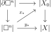
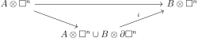
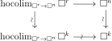
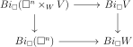

Simplicial
9 Models for Homotopy Types
9.1 Test Categories
Let \(X\) be a simplicial set. We can put a homotopical structure on the \(\Cat \) by declaring \(C \to D\) to be an equivalence if \(BC \to BD\) is. By Corollary 7.27, the map \(X \to B(X_{\Delta /})\) is an equivalence. It follows that the homotopy \(1\)-category of \(\Cat \) agrees with that of simplicial sets.
This construction can be attempted on any small category. Let \(A\) be a small category, and \(X \in \Set ^{A^{op}}\), which we will call an \(A\)-set. We can then construct the category \(X_{A/}\) and declare the weak equivalences of \(A\)-sets to be those such that \(B(-)_{A/}\) is a weak equivalence. Then it was asked by Grothendieck in Pursuing stacks, when does the map \(i_A:X \to X_{A/}\) induce an equivalence on homotopy \(1\)-categories?
\(i_A\) has a right adjoint \(i_A^*\), sending \(C\) to \(a \mapsto \Hom (A_{/a},C)\). \(i_A^*i_A(C)\) is the category with objects functors \(A_{/a} \to C\) for some \(a \in A\). The counit \(\epsilon :i_A^*i_A(C) \to C\) of the adjunction sends such a functor \(F\) to \(F(1_A)\).
-
Proof. An object of \(i_A^*i_A(C_{/c})\) is a functor \(A_{/a} \to C_{/c}\). But a functor \(A_{/a} \to C_{/c}\) is the same as a functor \(A_{/a} \to C\) sending \(1_A\) to \(C\), which is an object of \(\ee _{/c}\). □
We would like to have conditions so that \(\ee \) is a natural weak equivalence. The triangle identity will then show that the unit map is also a natural weak equivalence, and we will get the equivalence of homotopy categories.
A category is aspherical if the map to the terminal category is, meaning it is contractible. From Quillen’s Theorem A (Theorem 5.29), it follows that an aspherical map is a weak equivalence. We say that a map of \(A\)-sets is aspherical if after applying \(i_A\), it is aspherical. An \(A\)-set \(X\) is itself aspherical if the map to a point is aspherical, which is the same as saying that the map \(X_{A/} \to A\) is aspherical.
-
Proof. \((1)\implies (3)\implies (2)\) is clear since they are just special cases. \((2) \implies (1)\) follows from Quillen’s Theorem A and Lemma 9.1 □
-
Proof. This follows from Lemma 9.4 and the fact that
\[i_Ai_{A}^*(C)_{/a} \cong i_{A/a}i_{A/a}^*(C)\]
□
Observe that \(i_A(X)_{/a} = i_A(X\times a)\). This is the key to the next example.
-
Example 9.9. The simplex category \(\Delta \) is a test category. We already know it is a weak test category, and to see it is a local test category, we just need to observe that \(i_\Delta (X)_{/\Delta ^n} = i_{\Delta }(X\times \Delta ^n)\), so that if \(C\) is aspherical, then \(i_{\Delta /\Delta ^n}i^*_{\Delta /\Delta ^n}(C)\) is too since it is equivalent to \(i^*_\Delta (C)\).
-
Proof. Consider the composite \(i_{A\times B}X\xrightarrow {\pi _X}A\times B\xrightarrow {p}A\). There is a functor \(\omega _a:i_BX(a,-) \to p\pi _X/_{a}\) sending a object \(x \in X(a,b)\) to the object given by \(1_a,x\). There is a functor \(\gamma _a\) in the other direction sending \(f:a \to a',x \in X(a',b)\) in \(p\pi _X/_{a}\) to \((f,1)^*x\) in \(X(a',b)\). \(\gamma _a\omega _a\) is the identity, and there is a natural transformation \(\omega _a \gamma _a \to 1\) given by \((f,1):(1_a,(f,1)^*(x)) \to (f,x)\). Thus we get a canonical homotopy equivalence \(i_BX(a,-) \simeq (p\pi _X)_{/a}\).
Thus by the assumption, we get weak equivalences \((p\pi _X)_{/a}\to (p\pi _X)_{/a}\) for each \(a \in A\). By taking (diagonal) homotopy colimits over \(A\), we get that \(Bi_{A\times B}(X) \to Bi_{A\times B}(Y)\) is an equivalence. □
-
Proof. Let \(C\) be a category with a terminal object \(t\). It suffices to show that \(i*_{A\times B}C_{/(a,b)}\) is equivalent to a point. To see this, we first observe that \({A\times B}_{/(a,b)} = A_{/a}\times B_{/b}\).
Thus \(i^*_{A_{/a}\times B_{/b}}C(a',b') = Hom((A_{/a})_{/a'}\times (B_{/b})_{/b'},C) = \Hom ((A_{/a})_{/a'},C^{(B_{/b})_{/b'}})\). \(C^{(B_{/b})_{/b'}}\) has a terminal object, so all the \(A_{/a}\)-sets are pointwise equivalent to a point, and by Lemma 9.10, we are done. □
-
Proof. \(A\times B\) is aspherical because \(A\) and \(B\) are, and \(A\times B\) is a local test category by Proposition 9.11 □
Let \(A\) be a category. Let \(p\) be the projection as in the lemma above, let \(i\) be the cocontinuous map from \(A\)-sets to \(\SSet \) sending \(a\) to \(B(A_{/a})\), and let \(i^*\) be its right adjoint. Let \(j\) be the cocontinuous functor from \(A\times \Delta \)-sets to \(\SSet \) sending \(a,n\) to \(B(A_{/a})\times \Delta ^n\). This has a right adjoint \(j^*\). Let \(q^*\) be the pullback functor from \(\SSet \) to \(A\times \Delta \)-sets.
-
Proof. There is a map \(q^*X(a,*) \to j^*X(a,*)\) sending \(X \to X^{B(A_{/a})}\) via the terminal object. Since this is an equivalence for each \(a\), by Lemma 9.10 it is an equivalence.
The map \(p^*i^*X \to j^*X\) in simplicial degree \(n\) is a map of \(A\)-sets \(X^{B(A_{/a}}\to (X^{\Delta ^{n}})^{B(A_{/a})}\). But this is a componentwise weak equivalence because \(\Delta ^n\) is contractible, so again by Lemma 9.10 it is an equivalence. □
The proof of Lemma 9.14 shows:
-
Corollary 9.17. Suppose that in addition to the assumptions of Lemma 9.16, \(A\) is aspherical, so it is a test category. Then \(i^*\) preserves and reflects weak equivalences.
The following gives a way of producing local test categories.
-
Proof. The second claim is straightforward, and for the first, we use the natural isomorphism \(i_AX_{/a} \cong A_{/a}\) for any map \(a \to X\). □
-
Proof. Write \(i^*_{[A]}X\) for \(i^*X\) to emphasize the dependence on \(A\). There is an isomorphism \(i^*_{[i_AY]}X\cong Y\times i^*_{[A]}X\), so the result follows from Lemma 9.18. □
\(i_{\square }(B_{\square }C\times \square ^n)\)
9.2 Basics of Cubical Sets
The category \(\square \) has the \(n\)-cubes \(\square ^n\) as objects for \(n\geq 0\). The maps \(\square ^n \to \square ^m\) can be identified with functors \((\Delta ^1)^n \to (\Delta ^1)^m\) which are composites of coordinate projections and face inclusions.
There is a monoidal product \(\otimes : \square \otimes \square \to \square \) corresponding to the isomorphism \((\Delta ^1)^n \times (\Delta ^1)^m = (\Delta ^1)^{n+m}\). This is not symmetric monoidal.
Let \(\square ^{\leq 1}\) be the full subcategory of \(\square ^0\) and \(\square ^1\). Here is the universal property of \(\square \):
-
Corollary 9.21. Let \(C\) be a cocomplete monoidal category. For any functor \(F:\square ^{\leq 1} \to C\), there is a unique (up to natural isomorphism) extension to a cocontinuous functor \(\tilde {F}:\Set _{\square } \to C\) which is lax monoidal, and monoidal if the tensor product on \(C\) preserves colimits. It has a left adjoint, the singular cubical set of the cocubical object given by \(X \mapsto \Hom _C(F(\square ^i),X)\).
The monoidal structure on \(\square \) gives rise to a Day convolution product \(\otimes \) on \(\Set _\square \). For \(X,Y \in \Set _\square \), this is given as the left Kan extension of \(X\times Y:\square ^{op}\times \square ^{op} \to \Set \) along the tensor product map. Explicitly, \(X\otimes Y = \colim _{\square ^n \to X,\square ^m \to Y} \square ^{n+m}\). Furthermore, \(\Set _{\square }\) is closed: we can define \(\hom (C,D)_n = \hom (C\otimes \square ^n,D)\).
The category \(\square \) has an orthogonal factorization system into epis, called degeneracy maps, and monos, called face maps.
-
Example 9.22. The objects \((\Delta ^1)^n\) form a cocubical object \(\square \to \SSet \). This gives a pair of adjoint functors \(\adjunction {|\cdot |}{\Set _\square }{\SSet }{S}\), the singular cubical set and simplcial realization. This is monoidal with respect to the product structure on \(\SSet \).
The functor \(\square \to \SSet \) factors through \(\Cat \). The right adjoint of the extension of this map to \(\Set _\square \) is the cubical nerve functor \(B_{\square }(C)\).
Similarly to simplicial sets, we can make sense of degenerate simplices and \(n\)-skeleta. An \(n\)-skeleton is left Kan extended from \(\square ^{\leq n}\).
-
Proof. The proof is basically that of Lemma 3.11. □
Define \(\partial \square ^n\) the way you would expect. The following lemma then holds, analogously to Lemma 2.17.
The analogs of the horns are \(\sqcap ^n_{\ee ,i}\), which are defined by removing the \(\ee ,i\) face from \(\partial \square ^n\), where \(\ee \in \{0,1\}, 0\leq i \leq n\). \(|\partial \square ^n| \to |\square ^n|\) is an anodyne extension since it is an inclusion and both are contractible.
-
Proof. From induction on \(n\) and Lemma 9.23, we can assume \(y\) is nondegenerate, and that the boundaries of \(x,y\) agree. We can also replace \(X\) by the subcomplex generated by the \(n-1\)-skeleton, \(x\), and \(y\).
If \(x \neq y\), let \(X_0\) be the subcomplex generated by the \(n-1\)-skeleton and \(x\). \(X\) is obtained from \(X_0\) by adjoining an \(n\)-cell. The fact that \(x_*=y_*\) gives a lift in the pushout diagram

This shows that \(|X_0| \to |X|\) must be surjective, which is a contradiction.
□
-
Proof. For the second statement, if an inclusion \(X\to Y\) is not an isomorphism, it is obtained by adjoining cells, which would give nontrivial inclusions after applying \(|\cdot |\). □
-
Proof. This amounts to showing that for each \(n\), \(i_{\square }(B_{\square }C\times \square ^n)\) is contractible. its objects consist of a functor \(f:\square ^k \to C\) and a map \(\sigma :\square ^k \to \square ^n\).
Since \(C\) has a terminal object \(t\), there is a natural homotopy to the constant map to the terminal object:
This gives a deformation retraction from \(i_{\square }(B_{\square }C\times \square ^n)\) to \(i_{\square }\square ^n\), which is aspherical since it has a terminal object, the identity. □
-
Proposition 9.28. Suppose that \(i:A \to \Cat \) is functor on a small category. Let \(i^*\) be the left adjoint of the extension to \(A\)-sets, and suppose that
-
1. \(i(a)\) has a terminal object for each \(a\).
-
2. If \(D\) has a terminal object, then \(i^*D\) is aspherical.
Then \(A\) is a local test category.
-
-
Proof. Let \(D\) be a category with a terminal object. By Lemma 9.6, it suffices to check that \(i_{A}(i_{A}^*D\times a)\) is aspherical for each \(a \in A\). Picking a terminal object for each \(i(a)\), there is a functor \(\square _{/a} \to i(a)\) sending a map \(\theta :a' \to a\) to \(\theta \) applied to the terminal object of \(i(a')\). This induces an \(A\)-set map \(i^*C \to i^*_AC\).
Suppose that \(h\) is a contracting homotopy of \(D\), and consider the composite
\[ i^*_A(D)\times B_A(\Delta ^1)\xrightarrow {1\times \alpha } i^*_AD\times i^*_A\Delta ^1\cong i^*_A (D\times \Delta ^1) \xrightarrow {h} i^*_A(D)\]
This provides a nulhomotopy from \(i^*_A(D)\) to the point, where we use \((2)\) to see that it is really a weak equivalence of \(A\)-sets. The nulhomotopy multiplied with an object \(a\) shows that in fact \(i^*_A(D)\times a \to a\) is an equivalence, so that \(i_A(i_A^*D\times a)\) is aspherical. □
9.3 Cisinski model structures
Let \(A\) be a small category. Let \(\Set _A\) denote the category of \(A\)-sets, and let \(C\) be a set of monomorphisms of \(\Set _A\).
-
Definition 9.30. An interval theory is an action on the category \(\Set _A\) by the monoidal category \(\square \), subject to the conditions:
-
(I1) \((-)\otimes \square ^1\) preserves monomorphisms and filtered colimits.
-
(I2) For every monomorphism \(i:X \to Y\) and coface \(d:\square ^{n-1} \to \square ^n\), the square
is a pullback.
-
(I3) For \(1\leq i \leq n\), the square
is a pullback.
-
The interval theory makes \(\Set _A\) tensored over \(\Set _\square \). Moreover, there is a cubical function space \(\hom _{\square }(X,Y)_n = \hom (X\otimes \square ^n,Y)\), giving an adjunction \(\hom (X\otimes K,Y) = \hom (K,\hom _{\square }(X,Y))\).
-
Proof. By induction on the number of cells using \((I2),(I3)\), we can show that the canonical map \(X\otimes \partial \square ^n \to \cup _{i,\ee }X\otimes \square ^{n-1}\) is an isomorphism (\(\cup \) denotes the not disjoint union). □
It follows that for any monomorphism \(K \to L\), the map \(X\otimes K \to X\otimes L\) is an monomorphism.
-
Example 9.33. The tensor product gives \(\Set _{\square }\) the structure of an interval theory. \((I1),(I3)\) are easy, and \((I2)\) can be proven by using Corollary 9.26.
-
Remark 9.34. For any inclusion \(K \subset L\) in \(\Set _{\square }\) and inclusion \(X\to Y\) of \(A\)-sets, the map \(Y\otimes K\cup _{X\otimes K}X\otimes L \to Y\otimes K\cup X\otimes L\) is an isomorphism, where the latter is the union as subobjects of \(Y\otimes L\). This essentially follows from \((I2)\) and the fact that it suffices to prove it for the inclusions \(\partial \square ^n\to \square ^n\).
The anodyne \((\otimes ,S)\)-cofibrations (or just anodyne cofibrations) are the saturated class of morphisms generated by the inclusions
-
(A1) \((Y\otimes \square ^n)\cup (a\otimes \sqcap ^n_{\ee ,i}) \to a\otimes \square ^n\) for all subobjects \(Y\) of \(a\in A\)
-
(A2) \(A\otimes \square ^n\cup B\otimes \partial \square ^n \to B\otimes \square ^n\) for all monomorphisms \(A \to B\) in \(S\).
We define the naive fibrations to be the maps that have the left lifting property with respect to all anodyne cofibrations. A cofibration is an inclusion. Notice that since the category is presheaves on a small category, the inclusions are generated by a small set under filtered colimits.
A naive homotopy between two maps \(X \to Y\) is a map \(X\otimes \square ^1\to Y\) restricting to the two maps. If \(Y\) is a naively fibrant object, then this is an equivalence relation by using the anodyne extensions \(X\otimes \sqcap ^n_{\ee ,i} \to X\otimes \square ^n\).
We say that \(X \to Y\) is a weak equivalence iff it induces a bijection on naive homotopy classes of maps to any naively fibrant object. Our model category on \(A\)-set valued presheaves will be defined using cofibrations and weak equivalences.
-
Proof. Choose an infinite cardinal \(\beta \) such that \(|A|<\beta \). Choose \(\kappa \) sot hat \(|A\otimes \square ^n| <\kappa \) when \(|A|<\beta \). Then \(\kappa \) works. □
-
Proof. Use essentially the proof of Corollary 2.22. □
-
Proof. Suppose that \(C \to D\) is an anodyne cofibration. Then it induces a surjection on maps to a naively fibrant object by the lifting property. It is an injection on homotopy classes by Lemma 9.36. □

-
Proof. Let \(F\) be the naive fibrant replacement functor coming from the small object argument. \(FX \to FY\) is a weak equivalence by the \(3\) out of \(4\) property and the fact that \(X \to FX\) is by Lemma 9.37. Thus it is a naive homotopy equivalence. By the homotopy extension property, we can assume that the homotopy inverse \(\sigma \) of \(Fi\) is a left inverse. Let \(h\) be a homotopy from \(Fi \circ \sigma \) to the identity. Let \(\kappa \) be sufficiently large. If \(Z\) is a subobject of \(Y\) such that \(Z\) is \(\kappa \)-small, by Lemma 9.35 and the fact that \(F\) preserves \(\kappa \)-filtered colimits, the homotopy \(H\) restricted to \(FZ\otimes \square ^1\) factors through \(FZ'\) for some \(\kappa \)-small \(FZ'\). By repeating this, we form a sequence of \(\kappa \)-small subobjects \(Z_i\) such that the homotopy restricted to \(Z_i\) factors through \(Z_{i+1}\). Then \(\cup Z_i\) has the property that \(F(\cup Z_i\cap X) \to FZ\) is a naive homotopy equivalence, so by the \(3\) out of \(4\) property, we get the desired result. □
-
Proof. Considering the diagram
where the indicated maps are anodyne, we see that the map for \(f\) is an equivalence iff the lower map is. The same is true for \(g\), giving the result. □
-
Proof. Let \(F\) be the naive fibrant replacement functor from the small object argument. using the \(3\) out of \(4\) property, we can replace \(D\) with \(FD\). Similarly, we can factor \(C\to D\) through an anodyne map and a naive fibration that is an equivalence. But then it is a homotopy equivalence, so by Lemma 9.39, we can reduce to when \(C \to D\) is an anodyne cofibration, when this follows by Lemma 9.36. □
-
Proof. Suppose we are givne a pushout
with \(j\) a weak equivalence and an inclusion. Then any map from \(C'\) into an fibrant object \(Z\) can be extended to \(D'\). On the other hand by Lemma 9.40, in the diagram
the left vertical map is an equivalence and an inclusion, so homotopies from \(C'\) to \(Z\) can be extended to \(D'\). □
-
Proof. Suppose then that we have a square
where \(i\) is a cofibration and an equivalence. Then there is a map \(\theta :B \to X\) making the upper right triangle commute since \(i\) is an equivalence there is a homotopy extension property from \(A\) to \(B\), and \(X\) is naively fibrant. The commutative square for \(\theta \) is homotopic to the original diagram, and by finding a lift in the diagram
we can produced the originally desired lift. □
More generally, naive fibrations and fibrations to a fibrant object coincide.
-
Proof. From Lemma 9.38 and Lemma 9.41, the cofibrations that are weak equivalences are generated by a small set, and the cofibrations are clearly generated by a small set. These then give two factorization systems. By Lemma 4.14, it suffices to check that trivial fibrations are weak equivalences.
Given a map \(f:X \to Y\), there is a section \(s\). \(sf\) is homotopic to the identity because of the lifting property, so \(f\) is a homotopy equivalence. □
When the model structure is defined by an interval object \(I\), then we call it the \((I,S)\)-model structure.
-
Proof. Let \(W\) be the class of maps \(U \to V\) satisfying the condition on \(f\) in the statement of the theorem. \(W\) is closed under transfinite composition and retracts. The cofibrations in \(W\) are closed under pushout by an arbitrary morphism, because a basechange of a pushout square of sets where one map is an injection is a still a pushout square, and trivial cofibrations are stable under cobase change. Furthermore, \(W\) satisfies a weak \(2\) out of \(3\) property: if \(g\circ f\) and \(f\) are in \(W\), then \(g\) is too. This follows from the \(2\) out of \(3\) property.
By assumption \(W\) contains \(S\), and it is easy to see that \(W\) contains all projections \(K\otimes \square ^n \to K\). Next, we see that \(W\) contains all the standard inclusions \(K \to K \otimes \square ^1\). Indeed, Let \(Y\) be an object with a fibration to \(K\otimes \square ^1\) and \(Y'\) be the pullback to \(K\). Then by creating a lift in the diagram
where \(h\) is the homotopy contracting the image of \(Y\) to the copy of \(Z\) over which \(Y'\) lives, we get a map \(g:Y\to Y\) that factors through \(Y'\) by the universal property of pullback. By construction, the composite \(f_*\circ g\) is homotopic to the identity via \(H\). By the universal property of pullback again, the homotopy \(H_{|Y'}\) factors through \(Y'\), giving a homotopy between \(f_*\circ g\) and the identity.
It follows that whether a map is in \(W\) depends only on its naive homotopy class (or rather the equivalence relation generated by naive homotopy). It follows that the maps \(K\otimes \sqcap ^n_{i,\ee } \to K\otimes \square ^n\) are in \(W\).
By considering the factorization
and using the weak \(2\) out of \(3\) property and the fact that \(W\) is closed under pushouts of monomorphisms, we see that the generating cofibrations labelled \(i\) are in \(W\). We know that \(S \in W\) by assumption. By induction on \(n\) and comparing the pushout diagrams
it follows that \(f\otimes \partial \square ^n\) is in \(W\) for each \(f \in S\).
Then, by considering the factorization

and using the weak \(2\) out of \(3\) property, we see that all the generating anodyne cofibrations are in \(W\).
Now given a fibration \(p:X \to Y\) with \(Y\) fibrant, and an equivalence \(Z \to Y\), we can factor \(Z\to Y' \to Y\), where \(Z \to Y'\) is an anodyne cofibration, and by Lemma 9.42 the map \(Y' \to Y\), which is apriori a naive fibration, is actually a trivial fibration. Then the pullback of \(Z \to Y\) along \(p\) is an equivalence, because we know that this is true for anodyne cofibrations and trivial fibrations. Thus by Lemma 4.67, the model structure is proper. □
9.4 Colimits in Cisinski model structures
-
Proof. It suffices to show that for any inclusion \(X \to Y\) of \(A\)-sets, \(C \to *\) has the right lifting property with respect to \(i_A(X) \to i_A(Y)\). However, if \(f:x\to y\) is a map in \(i_A(Y)\) such that \(y \in i_A(X)\), then \(f \in i_A(X)\). Thus, we can just send anything in \(i_A(Y)-i_A(X)\) to the terminal object, giving the lift. □
It follows that in a Cisinski model structure, the projection \(i^*_A(C) \to *\) is a trivial fibration. We say that a model structure on \(A\)-sets (or its weak equivalences) is regular if the map \(\hocolim _{a \to X}a \to X\) is a weak equivalence for any \(X\), where \(\hocolim \) is the homotopy colimit in the projective model structure.
Throughout this subsection, we will view the category \(\Set _A\) as coming with a Cisinski model structure for some interval theory and inclusions \(S\).
We define the internal nerve \(B_{h}C\) of a category \(C\) to be \(\hocolim _{C}*\).
-
Proof. Apply Lemma 9.51 to the map \(i_AX\to i_AY\). □
-
Proof. Suppose \(E\) has a terminal object and consider the projection \(\pi :C\times E \to C\). \(\pi _{/c} \cong C_{/c}\times E\) for each \(c\), which has a terminal object for each \(c\). Thus the map \(B_h(C\times E)\to B_h(C)\) is an equivalence. Thus it follows that the maps \(f\) and \(g\) induce after applying \(B_h\) are homotopy inverses, so \(B_hC \to B_hD\) is a weak equivalence. □
-
Proof. Apply Corollary 9.52, using regularity and \(M1\). □
-
Proof. The fibres of the map \(\ee :i_Ai^*_AC \to C\) are \(\ee /c \cong i_Ai^*_A(C/c)\), and the map \(i^*(C/c) \to *\) is a weak equivalence by Lemma 9.49. This gives the last equivalence. The other two follow from regularity, \(M1\), and comparing colimits. □
Recall the classical Grothendieck construction, which takes a functor \(I \to \Cat \) to a category \(\int _IF\) with objects \(i \in I, x \in F(i)\). This functor naturally lives over \(I\).
-
Proof. There is clearly a forgetful functor \(Q:\int _DF_{/d}\to C\). We construct a homotopy inverse by having \(i(c)\) be the pair \(c, 1_{f(c)}\). \(Q\circ i = 1\) and there is a natural transformation \(iQ \to 1\). □
Quite similarly, we obtain:
If \(F: I \to \Set _A\) is a diagram, then composing with \(i_A\) gives a functor to \(\Cat \). Observe that there is an isomorphism of Grothendieck constructions \(\int _{I}i_A(F) \cong \int _{A}\hom (a,F)\), where \(\hom (a,F)\) is the functor \(A \to \Cat \) sending \(a\) to the catrgory with objects a map \(a \to F(i)\) for some \(i\).
The maps \(\hom (a,F) \to \lim _iF(i)(a)\) where the latter is viewed as a discrete category assemble into a map \(\int _{i \in I}i_AF(i) \to i_A\colim _i(F(i))\).
-
Proof.
By Corollary 9.60 and Lemma 9.50, it suffices to show that \(F(i)(a) \to \colim _iF(i)(a)\) induces a weak equivalence \(B_h(\int _iF(i)(a)) \to B_h(\colim _iF(i)(a))\cong \colim _iF(i)(a)\) in both cases. By Lemma 9.59, there is an equivalence \(\hocolim _I B_hF(i)(a) \to B_h(\int _iF(i)(a))\) and each \(B_h(\int _iF(i)(a))\) is equivalent to the discrete \(A\)-set \(F(i)(a)\) by Lemma 9.50, so this follows from the fact that \(\hocolim = \colim \). □
An \(A\)-set \(X\) is regular if the map \(\hocolim _{a \in X} a \to X\) is an equivalence.
Finally, we will construct a natural Cisinski model structure on test categories with the right weak equivalences.
Let \(C,A\) be small categories, and \(\Set _{A\times C}\) the category of presheaves of \(C\) with values in \(A\)-sets. If \(A\) is a test category, let the pullback of \(I = i^*_A(1)\) to \(\Set _{A\times C}\) define an interval theory. Let \(\Delta ^1\) denote the interval theory on \(\Set _{\Delta \times C}\) given by \(\Delta ^1\) pulled back, and let \(S\) be a set of cofibrations of simplicial presheaves. The \((\Delta ^1,S)\) model structure is the Cisinski model structure on \(\Set _{\Delta \times C}\) coming from this data. A map \(X \to Y\) is an S-equivalence in \(\Set _{A\times C}\) if the induced map after applying \(i^*_\Delta i_A\) is an equivalence in the \((\Delta ^1,S)\)-model structure.
-
Proof. There is an induced diagram of inclusions of simplicial sets
such that \(i\) is an a weak equivalence, satisfying the conditions of Lemma 9.38. Thus we can apply that lemma to find a small subobject \(A_0\) of \(i^*_\Delta i_AY\) satisfying its conclusion. This small subobject will be a subobject of \(i^*_\Delta i_AB_0\) for some small \(B_0\). We can then replace \(Z\) with \(B_0\), and iteratively construct a sequence \(B_i,A_i\). Since \(i^*_\Delta i_A\) preserves filtered colimits, \(\colim _i i^*_\Delta i_AB_i = \colim A_i\) shows that \(\cup _i B_i\) works. □
-
Theorem 9.64. Suppose that \(A\) is a test category and \(C\) a small category. Then there is a combinatorial model structure on the category \(\Set _{A\times C}\) such that the weak equivalences are the \(S\)-equivalences, and the cofibrations are the monomorphisms. \(Bi_A\) gives a Quillen equivalence with \(\Set _{\Delta \times C}\).
-
Proof. That \(Bi_A\) gives a Quillen equivalence is clear since it is a left adjoint, and preserves monomorphisms and gives an equivalence on homotopy \(1\)-categories. Combinatoriality follows from Lemma 9.63. So it suffices to show the existence of the model structure.
We can use the dual of Proposition 4.15 for tha adjunction coming from \(Bi_A\): we only need to show that if \(p:X \to Y\) has the right lifting property with respect to all inclusions, it is an equivalence. But the lifting property implies that \(p\) has a section \(\sigma \). Moreover letting \(I = i^*_A(1)\), by choosing a lift in the diagram
and applying \(Bi_A\), we see that \(p\) is a homotopy equivalence. □
When \(A\) is a test category, and \(C = *,S = \phi \), the model structure arising here is called the standard model structure for the test category.
9.5 Weak equivalence classes of functors
-
Definition 9.65. A weak equivalence class \(W\) of functors between small categories is a class such that the following hold:
-
LF1 \(W\) is weakly saturated (bad terminology), meaning that:
\(W\) containes isomorphisms
\(W\) satisfies \(2\) out of \(3\).
if \(i \circ r \in W\) and \(r \circ i = 1\), then \(r \in W\).
-
LF2 If \(C\) has a terminal object, then \(C \to *\) is in \(W\).
-
LF3 Given a commutative triangle \(\alpha = \beta \circ u\), if all the functors \(\alpha _{/c} \to \beta _{/c}, c \in \cod \beta =\cod \alpha \) are in \(W\), then \(u\) is.
-
Grothendieck called these fundamental localizers.
If \(W\) is a weak equivalence class and \(C\times D\to C\) is a projection where \(D\) has a terminal object, then \(C\times D \to C\) is in \(W\), essentially by \(LF3\). It follows that given a natural transformation \(f \to g\), \(f \in W\) iff \(g\) is.
-
Proof. By comparing with the case when \(f = 1\) and using \(LF3\), we can reduce to the case \(f=1\). In this case, there is a canonical map \(r:\int _iC_i \to C_0 \cup _{C_1} C_2 = C_2\), which has an obvious section \(j\). There is a zig zag of natural transformations between \(1\) and \(jr\) , so \(jr\) is in \(W\). Thus by \(LF1\), \(r,j\) are in \(W\). □
Note that \(W\) is closed under small disjoint unions by \(LF3\).
Suppose that \(A\) is a test category.
-
-
1. Suppose given a diagram of \(A\)-sets
where \(i\) is a monomorphism. Then the induced map \(\int _{i}i_AX_i \to i_A(X_1\cup _{X_0}X_2)\) is in \(W\).
-
2. Suppose given a diagram \(Y\) in \(A\)-sets index by an ordinal number \(\alpha \), and such that all morphisms \(Y_i \to Y_j\) are monomorphisms. Then the induced map
\[\int _ii_AY_i \to i_A(\colim _iY(i))\]
is in \(W\).
-
-
Proof. By \(LF3\), it suffices to show that the diagrams of discrete categories \(F(i)(a) \to \colim _iF(i)(a)\) is an equivalence, reducing to the case of a discrete diagram.
In the first case, the diagram is a union of diagrams of either form:
for which we can apply Lemma 9.67.
In the second case, given \(y \in \lim Y_i\), the category \(\pi _{/y}\) has an initial object given by the smallest \(i\) such that \(y \in Y_i\). Thus applying \(LF3\) again, we are done. □
The following follows immediately from Lemma 9.67 and Lemma 9.68.
-
Proof. Every weak equivalence factors as a trivial fibration which admits a section and a trivial cofibration, so if suffices to prove it for trivial cofibrations, which then reduces via retractions from anodyne maps. These are filtered colimits of pushouts of the generating anodyne inclusions \(\Lambda ^n_k \to \Delta ^n\), so by Corollary 9.69, it suffices to show it for these inclusions.
\(i_{\Delta }\Delta ^n\) has a terminal object, so its map to the terminal object is in \(W\). It follows that all the maps \(i_{\Delta }\Delta ^n \to i_{\Delta }\Delta ^m\) are in \(W\). By constructing the horns as iterated pushouts of cells, this can be shown again using Corollary 9.69 and induction. □
The following result is a conjecture of Grothendieck, proved by Cisinski.
-
Proof. By \(LF2\) and \(LF3\), the map \(i_\Delta i^*_{\Delta }C \to C\) is in \(W\), and so by Theorem 9.70 and the diagram
the map is in \(W\). □
-
Proof. The class \(F(M)\) of all functors \(f:C \to D\) which induce weak equivalences on \(B_h\) is a weak equiavlence class. \(LF1,LF2\) are easy, and \(LF3\) follows from Lemma 9.51.
Suppose \(X \to Y\) is a test weak equivalence. Then \(Bi_A\) applied to it is a weak equivalence, and since \(F(M)\) is a weak equivalence class, by Corollary 9.71, \(B_hi_A\) applied to it is a weak equivalence of \(M\). By the regularity assumption, this implies the map is a weak equivalence. □
-
Proof. Let \(i^*:\SSet \to \Set _A\) be the functor defined by \(i^*X(a) = X^{BA_{/a}}\), the right adjoint to \(i\), which sends \(Z\) to \(Bi_AZ\). The unit map \(Z \to i^*Bi_AZ\) is an equivalence, so \(Bi_AZ\) preserves trivial cofibrations, and \(i^*\) preserves fibrations.
Let \(j:Bi_AY \to Z\) be a trivial cofibration with \(Z\) Kan complex. Then the composite \(X\times Y \to X\times i^*Bi_AY \to X\times i^*Z\) is the product of \(1_X\) with a homotopy equivalence so we can replace \(Y\) by \(i^*Z\). By Corollary 9.19, we can replace \(Z\) with \(BC\) for a category \(C\).
Observe \(i^*BC = i^*_AC\). Write \(\pi \) for the composite
\[i_A(X\times i^*_AC) \to i_Ai^*C \xrightarrow {\ee } C\]
There are isomorphisms \(\pi _{/c} \cong i_AX\times \ee _{/c} \cong i_AX\times i_Ai^*_A(C_{/c})\) by Lemma 9.1. The functor \(X\mapsto X\times i^*_A(D)\) preserves weak equivalences if \(D\) has a terminal object, and there are natural weak equivalences \(\hocolim _C B(\pi _{/c}) \to Bi_A(X\times i^*_A(C))\) so the result follows. □
9.6 Model structure on Cubical Sets
We define the canonical interval model structure on cubical sets by taking the interval theory defined by the object \(I = i^*_{\square }(1)\) and letting \(S\) be the set of vertex maps \(* \to \square ^n\), and using the Cisinski model structure.
-
Proof. The cofibrations agree, so it suffices to show that the weak equivalences agree. The weak equivalences of the canonical interval model structure are test weak equivalences. One way to see this is to take a fibrant replacement via anodyne maps using Corollary 9.43 which are in particular test weak equivalences, and observe that equivalences between fibrant objects are homotopy equivalences, which are test weak equivalences.
For the converse, by Theorem 9.72, it suffices to check regularity on the canonical interval model structure (\(M1\) is satisfied by construction). By Lemma 9.62, it suffices to check this on \(\square ^n\). but \(B_hi_{\square }\square ^n\) is the homotopy colimit of a diagram with a terminal object, so it contractible, but so is equivalent \(\square ^n\), which is contractible by construction. □
-
Proof. It suffices to show that the maps \(* \to \square ^n\) satisfy the criterion in Theorem 9.45. To see this, recall that in the proof of that theorem, the criterion was shown to be naively homotopy invariant. Any map \(\square ^n \to Y\) for any fibrant \(Y\) is naively nulhomotopic because \(*\to \square ^n\) is an anodyne inclusion. Thus we can assume that the map is null, so the relevant diagram is
and \(v_*\) is an equivalence by Lemma 9.73. □
-
Proof. We use Theorem 9.72, so it suffices to check \(M1\) and regularity.
All the vertex maps \(* \to \square ^n \to \square ^k\) are trivial cofibrations, so that all the morphisms \(\square ^n \to \square ^m \to \square ^k\) are weak equivalences. In particular, \(M\) satisfies \(M1\).
As in Theorem 9.74, it suffices to check regularity on the \(n\)-cubes. This can be done by observing that there are equivalences

□
-
Corollary 9.77. The standard model structure coincides with the model structure in Lemma 9.76.
-
Proof. Use Lemma 9.76 to see that the weak equivalences are the same, and the cofibrations are clearly the same. □
A map is an naive fibration in the model structure on cubical sets if it has the right lifting property with respect to the inclusions \(\sqcap _{(i,\ee )} \subset \square ^n\).
-
Proof. First we will show that a naive fibration that is a weak equivalence is a trivial fibration. So let \(V \to W\) be such a map. We can form the diagram
\(q_0,q_1\) are fibrations by Lemma 9.78. By right properness, \(\tau _*\) is an equivalence. It follows from Quillen’s Theorem B (Theorem 7.30) that the diagram of simplicial sets

is homotopy cartesian. Since the right vertical map is an equivalence, the left vertical map is too. Thus \(q_1,q_0\) are trivial fibrations, so \(V \to W\) has the right lifting property with respect to all inclusions \(\partial \square ^n \to \square ^n\).
Now suppose that \(f:X \to Y\) is a naive fibration. Choose a fibrant replacement \(Y \to RY\), and factor \(X \to RY\) through an object \(U\) as an anodyne map and a fibration using Lemma 9.42. By properness (Theorem 9.75), the map \(X \to Y\times _{RY}U\) is an equivalence, so it factors as an anodyne map \(i:X \to W\) and a naive fibration \(q:W \to Y\times _{RY}U\) that is an equivalence. \(q\) is trivial fibration by what was already proven. \(f\) is a retract of the composite \(W \to Y\times _{RY}U \to Y\) so is a fibration. □
Recall there is a triangulation functor \(|\cdot |:\Set _{\square } \to \SSet \). Since \(|\square ^n|\) is contractible, the canonical map \(\hocolim _{\square ^n \to X}|\square ^n| \to Bi_{\square }X\) is an equivalence. There is also a canonical map \(\hocolim _{\square ^n \to X}|\square ^n|\to |X|\).
-
Proof. It is a left adjoint, preserves monomorphisms, and trivial cofibrations, since they are generated by \(\sqcap ^n_{(i,\ee )}\to \square ^n\) by Theorem 9.79, which are clearly sent to equivalences. By Theorem 9.74, cubical sets is regular, so the map \(\hocolim _{\square ^n \to X}\square ^n\to X\) is an equivalence, and as a left Quillen functor, after applying \(|\cdot |\), we get an equivalence too. It follows that there is a zigzag of natural equivalences
\[|X|\leftarrow \hocolim _{\square ^n \to X}|\square ^n| \to Bi_{\square }X\]
and we know \(Bi_{\square }X\) induces an equivalence on homotopy categories since \(\square \) is a test category, so \(|X|\) does too. □